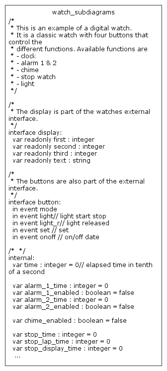

This digital watch was first designed by Harel, the founder of the Statecharts Theory. He described it in "On Visual Formalisms", published in "Communications of the ACM" in May 1988.
As you can see in the picture below, the complete statechart is rather complicated and not easy to grasp on first glance:
For reference, here's the interface declaration of both statecharts:
